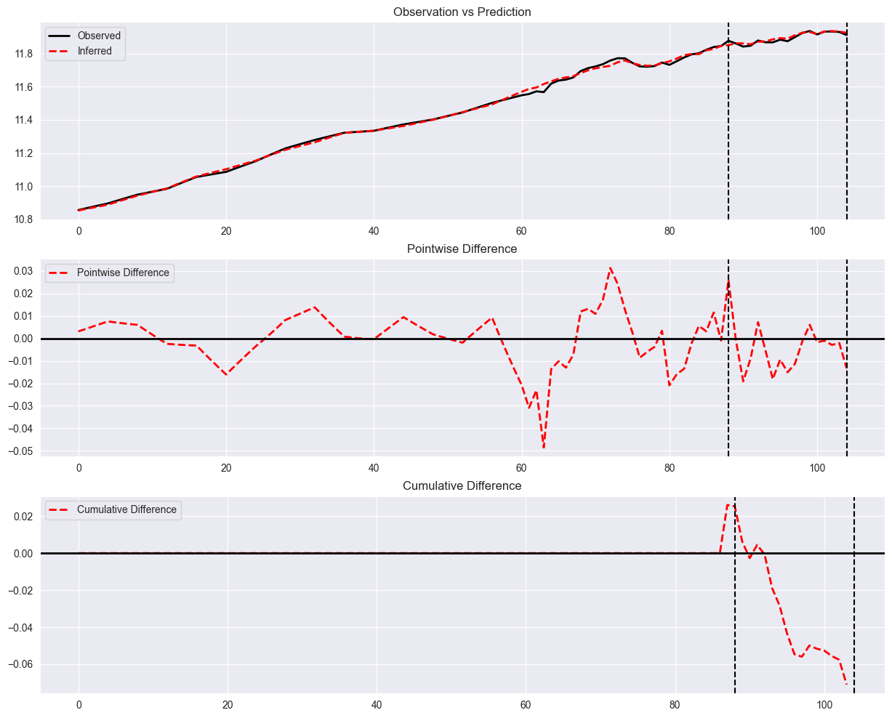

SCM Usage
This is a simple example of how to use the Synthetic Control Method to estimate the causal effect using the well known Kansas dataset.
[2]:
from panel_exp.panel_data import long_df_to_paneldataset
from panel_exp.methods.scm import SyntheticControl
import pandas as pd
long_df = pd.read_csv('kansas_parsed.csv')
panel_data = long_df_to_paneldataset(long_df, "year_qtr", "state", "lngdp", ["Kansas"], 2012)
scm = SyntheticControl()
scm.run_analysis(panel_data)
[3]:
scm.plot()

[ ]: